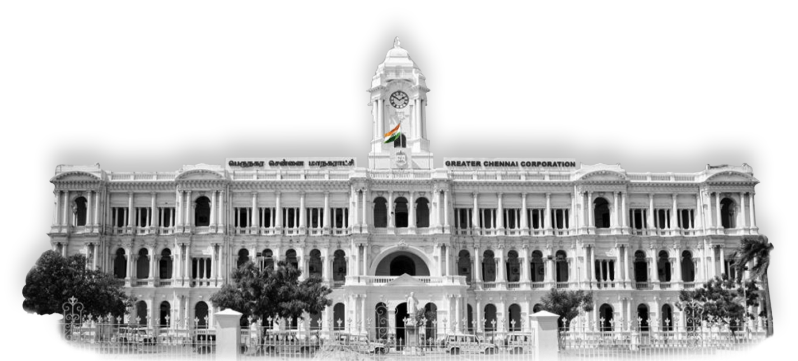
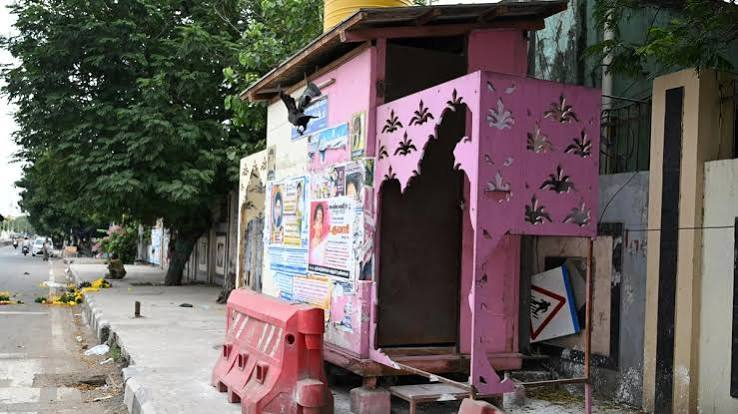
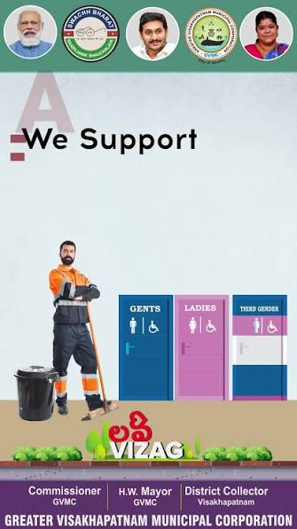
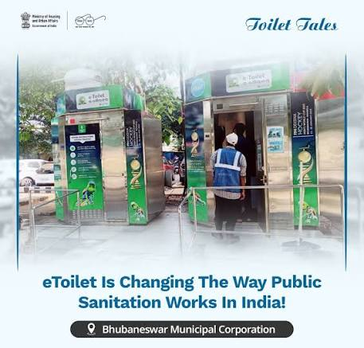

corportaion

Greater Chennai Corporation (est. 1688) is the oldest in India and second oldest in the world after City of London Corporation. Managed roads, water supply, public health, tax collection in Madras (Chennai).2 May 2026
Corporation works:


